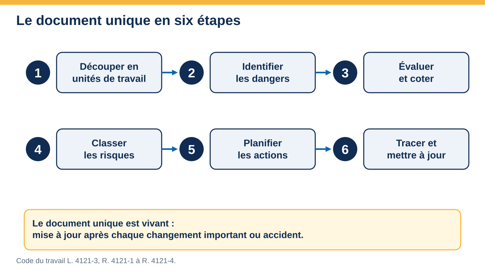
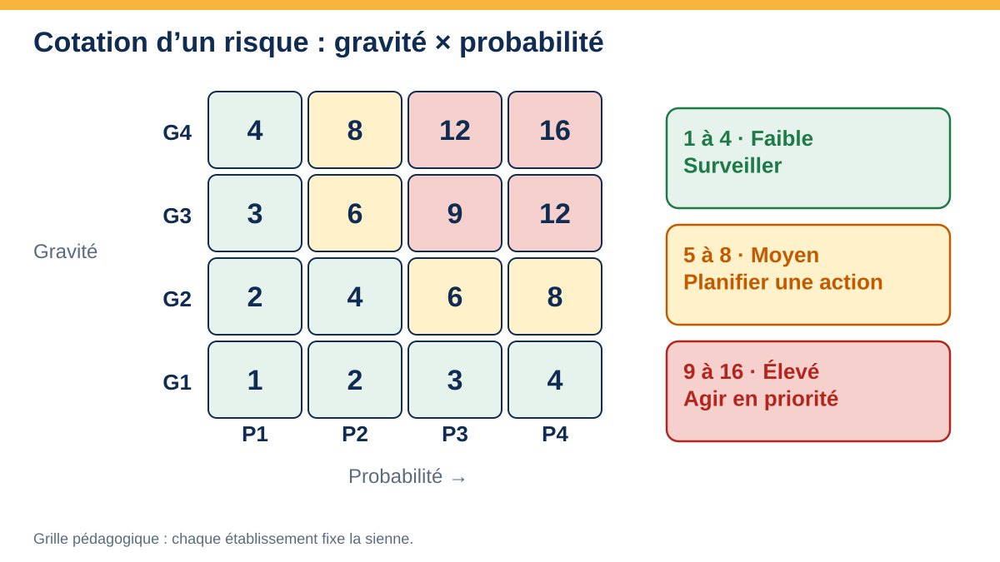
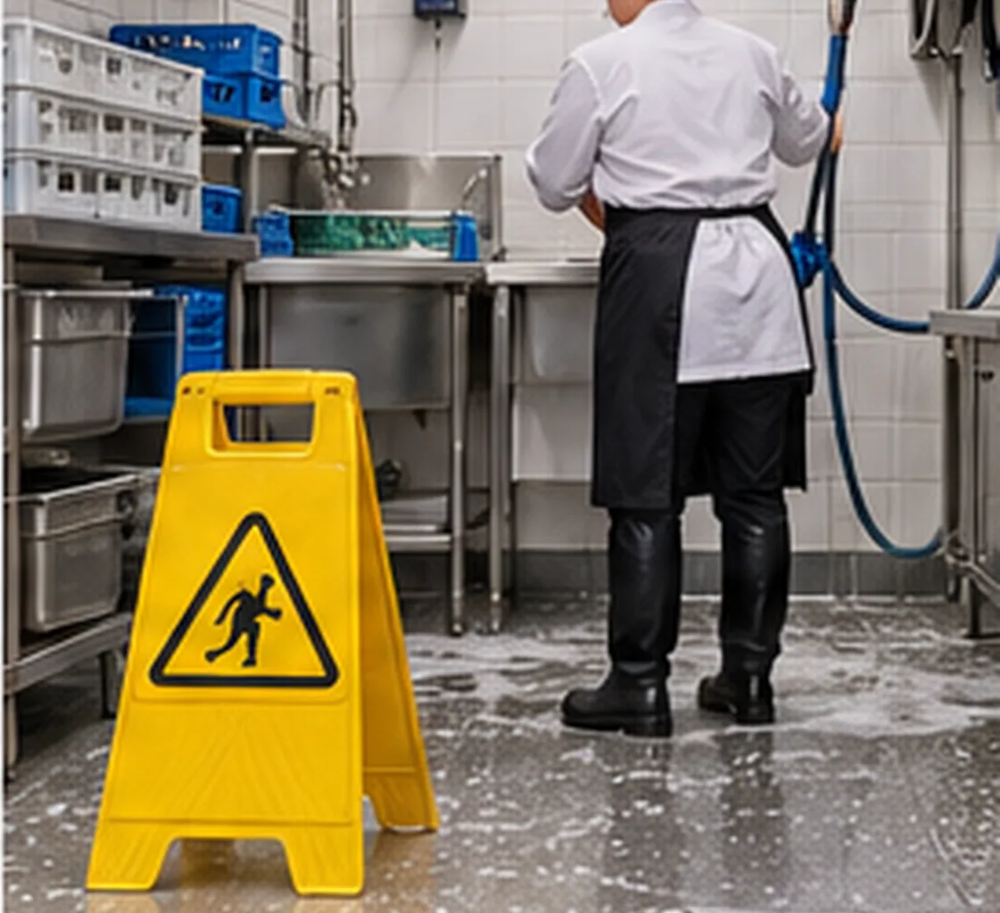
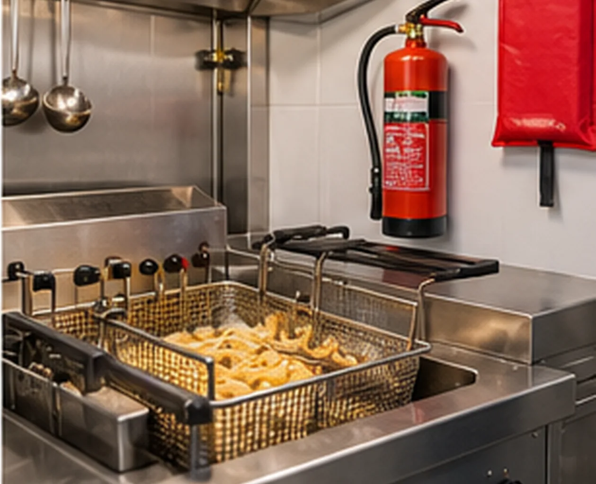
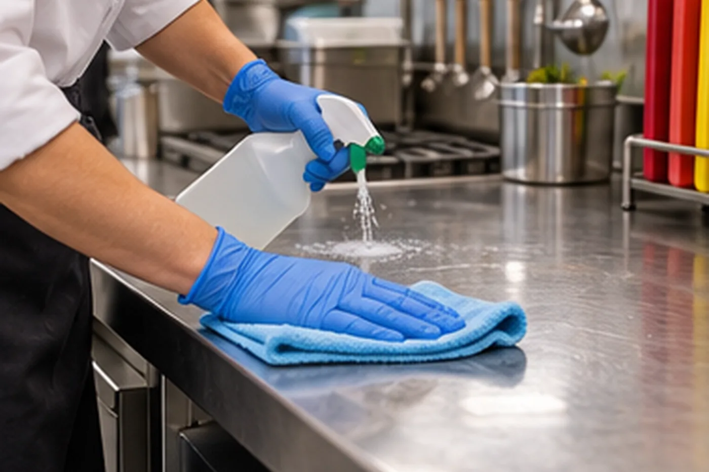
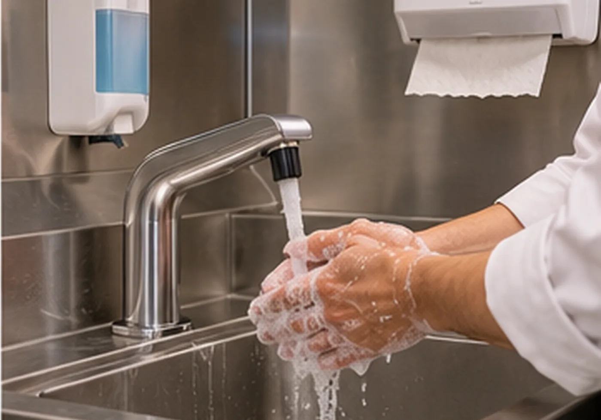

Document unique d’évaluation des risques
Repérer, coter, planifier, tracer : la démarche pour construire le document unique de votre établissement, avec un tableau interactif, un référentiel de risques de restauration et un plan d’action.
Cadre
L’employeur doit évaluer les risques pour la santé et la sécurité de ses salariés et en transcrire le résultat dans un document unique d’évaluation des risques professionnels (DUERP). C’est la trace de la démarche de prévention : dangers repérés, cotation, mesures. Il se fonde sur les principes généraux de prévention du Code du travail.
| Point | Repère |
|---|---|
| Obligation | L’employeur, dès le premier salarié (Code du travail, L. 4121-1 à L. 4121-3, R. 4121-1 et suivants). |
| Contenu | Résultat de l’évaluation par unité de travail ; classement des risques ; inventaire des risques identifiés. |
| Mise à jour | Au moins chaque année dans les entreprises d’au moins 11 salariés ; dans toutes, lors de tout aménagement important, de toute information nouvelle ou après un accident ; la loi fixe aussi l’actualisation des actions de prévention associées. |
| Actions de prévention | Programme annuel de prévention (au moins 50 salariés) ou liste des actions (moins de 50), en lien avec le document. |
| Conservation | Versions successives conservées (durée de 40 ans prévue par la loi du 2 août 2021), à la disposition des salariés, du médecin du travail, du CSE et de l’inspection du travail ; le portail national de dépôt dématérialisé prévu par la loi n’était pas opérationnel au dernier état vérifié (mi-2026) : le dépôt en ligne n’est pas exigé, la conservation par l’employeur l’est ; à revérifier avant la session. |
| Participants | Employeur, salariés, CSE, médecin du travail, salarié compétent en prévention ; conseil possible d’un préventeur ou du service de prévention. |
| Sanction | L’absence de document est sanctionnée d’une contravention (R. 4741-1). Une loi de 2026 contre les fraudes sociales et fiscales a créé une amende administrative pour absence de document : date d’entrée en vigueur et montant à vérifier sur Légifrance. |
Vocabulaire à maîtriser
| Terme | Sens | Exemple en restauration |
|---|---|---|
| Danger | Propriété ou situation susceptible de causer un dommage | Huile de friteuse chaude |
| Situation dangereuse | Moment où une personne est exposée au danger | Vidanger la friteuse en plein service |
| Événement dangereux | Ce qui fait basculer la situation | Projection d’huile |
| Dommage | Atteinte à la santé | Brûlure du second degré |
| Risque | Combinaison de la gravité du dommage et de la probabilité qu’il survienne | Brûlure à la friteuse : gravité 3, probabilité 3 |
| Prévention | Mesures qui évitent ou réduisent le risque | Thermostat, procédure, formation |
| Unité de travail | Poste ou groupe de postes aux situations comparables | Plonge, cuisine, salle |
Six étapes

Cuisine, plonge, salle, réserves, chambres froides, livraisons, entretien, bureau. Une unité regroupe des situations comparables. Questions : qui travaille où, avec quels équipements, à quels horaires ?
Observer le travail réel, interroger les équipes, relire les accidents et presque-accidents, les arrêts de travail, les fiches de données de sécurité, les contrôles. On liste d’abord, on ne note pas encore.
Pour chaque situation : gravité × probabilité, en tenant compte des mesures déjà en place. Même grille pour tous, mêmes critères.
Les risques sont ordonnés par niveau : les plus élevés d’abord. Un risque faible n’est pas oublié : il est surveillé.
Mesure, responsable, échéance, moyen, indicateur. On commence par supprimer ou réduire à la source.
Date, version, participants. Révision après chaque changement important, accident, nouvelle machine, nouveau menu, nouveau local.
Les neuf principes généraux de prévention
Ils guident le choix des mesures (Code du travail, L. 4121-2).
- Éviter les risques.
- Évaluer les risques qui ne peuvent pas être évités.
- Combattre les risques à la source.
- Adapter le travail à l’homme.
- Tenir compte de l’évolution de la technique.
- Remplacer ce qui est dangereux par ce qui l’est moins.
- Planifier la prévention (technique, organisation, conditions de travail, relations sociales).
- Prendre des mesures de protection collective en priorité sur les mesures individuelles.
- Donner les instructions appropriées aux travailleurs.

Cotation : gravité × probabilité
Grille pédagogique : chaque établissement fixe la sienne et la garde stable d’une évaluation à l’autre.
| Gravité | Définition |
|---|---|
| 1 · Faible | Soin léger, pas d’arrêt de travail |
| 2 · Moyenne | Arrêt de travail, lésion réversible |
| 3 · Grave | Lésion importante, incapacité permanente possible |
| 4 · Très grave | Décès ou incapacité permanente lourde |
| Probabilité | Définition |
|---|---|
| 1 · Très rare | Presque jamais |
| 2 · Rare | Quelques fois par an |
| 3 · Fréquent | Chaque mois |
| 4 · Très fréquent | Chaque jour ou chaque service |
| P1 | P2 | P3 | P4 | |
|---|---|---|---|---|
| G4 | 4 | 8 | 12 | 16 |
| G3 | 3 | 6 | 9 | 12 |
| G2 | 2 | 4 | 6 | 8 |
| G1 | 1 | 2 | 3 | 4 |
| Score | Niveau | Décision |
|---|---|---|
| 1 à 4 | Faible | Surveiller, maintenir les mesures |
| 5 à 8 | Moyen | Planifier une action |
| 9 à 16 | Élevé | Agir en priorité, mesure immédiate si besoin |

Familles de risques en restauration
Glissades, chutes de plain-pied
Sols gras ou mouillés, plonge, escaliers de cave, seuils.
- Sols antidérapants, pentes et évacuations.
- Chaussures de sécurité antidérapantes.
- Nettoyage au fil de l’eau, signalisation provisoire en complément seulement.
- Escaliers : éclairage, mains courantes, bandes antidérapantes.

Brûlures et incendie
Fourneaux, friteuse, four, plats chauds, vapeur ; huile et graisses.
- Gants et torchons adaptés, protections thermiques.
- Thermostat de sécurité de la friteuse, niveau et filtration de l’huile.
- Hotte, filtres et conduits nettoyés ; extincteurs, couverture anti-feu, issues dégagées.
- Exercice d’évacuation, consigne d’alerte.

Coupures
Couteaux, trancheuse, mandoline, verrerie, boîtes de conserve.
- Couteaux affûtés et rangés, planches stables.
- Protecteurs de trancheuse, gant anti-coupure pour les opérations à risque.
- Évacuation et ramassage de la verrerie cassée avec outil adapté.
Manutention et TMS
Cartons, caisses, bacs, marmites, gestes répétés, station debout prolongée.
- Chariots, diable, étagères à bonne hauteur, charges raisonnables.
- Plans de travail réglables, rotation des tâches, pauses.
- Livraisons étalées, aide à deux pour les charges lourdes.
Risque chimique
Détergents, désinfectants, déboucheurs, produits de lave-vaisselle.
- Étiquetage lisible (pictogrammes CLP), fiches de données de sécurité accessibles.
- Dosage automatique, jamais de mélange (eau de Javel et détartrant, par exemple).
- Gants, lunettes, ventilation ; stockage séparé des denrées.
- Douche oculaire ou rinçage d’urgence si le risque l’exige.

Risque électrique
Prises, rallonges, appareils humides, câbles au sol, interventions sur les équipements.
- Installation vérifiée, dispositifs différentiels.
- Pas de rallonge ni de multiprise en usage permanent, pas de câble au sol dans les zones humides.
- Interventions réservées au personnel habilité.
Ambiance thermique, bruit, éclairage
Chaleur près des feux, froid en chambre froide, bruit des machines, éclairage insuffisant.
- Ventilation, hydratation, vêtements adaptés, durée limitée en chambre froide.
- Matériel moins bruyant, protections auditives si besoin.
- Éclairage suffisant aux postes de découpe.
Risques psychosociaux, horaires, coups de feu
Pression du service, horaires décalés, tensions avec la clientèle ou en équipe.
- Planning connu à l’avance, repos garantis, pauses réelles.
- Organisation du coup de feu, effectif adapté, polyvalence.
- Consignes face à l’agressivité, espace d’expression.
Co-activité et livraisons
Livreurs, prestataires, quai, circulation de véhicules et de chariots.
- Plan de circulation, zones de déchargement balisées.
- Accueil des prestataires, consignes de sécurité, horaires.
Risque biologique et hygiène
Contacts avec denrées contaminées, déchets, nuisibles ; lien avec le PMS.
- Lavage des mains, tenue, vaccination à jour, gestion des déchets.
- Coordination avec le plan de maîtrise sanitaire.

Outil : votre tableau d’évaluation
Ajoutez des situations réelles de votre cuisine ou de votre salle, ou chargez le référentiel de restauration ci-dessous puis adaptez-le : le score et le niveau se calculent tout seuls. Le tableau est enregistré dans votre navigateur (rien n’est envoyé). Exportez-le pour le reprendre dans votre document unique.
| Unité de travail | Situation dangereuse | G | P | Score | Mesure ou action |
|---|
Plan d’action
Après la cotation, on transforme les risques moyens et élevés en actions datées. Le bouton « Générer le plan d’action » reprend les lignes dont le score est d’au moins 5, de la plus haute à la plus basse. Complétez le responsable, l’échéance et l’indicateur.
| Colonne | À préciser |
|---|---|
| Action | Verbe d’action, mesurable : « installer un tapis antidérapant à la plonge » |
| Responsable | Une personne, pas un service |
| Échéance | Une date |
| Moyen | Budget, temps, formation |
| Indicateur | Comment sait-on que c’est fait et efficace ? (nombre de chutes, contrôle visuel) |
| État | À faire, en cours, fait, vérifié |
Un document vivant : mise à jour et suivi
Le document unique se met à jour, il ne se classe pas. Déclencheurs :
- Accident du travail, maladie professionnelle, presque-accident.
- Nouvelle machine, nouveau produit, nouveau menu ou procédé, aménagement des locaux.
- Changement d’organisation, d’effectif ou d’horaires.
- Remarque du médecin du travail, du CSE, d’un salarié ou d’un contrôle.
- Échéance annuelle de revue.
Indicateurs simples à suivre : nombre d’accidents et de jours d’arrêt, presque-accidents déclarés, actions du plan réalisées dans les délais, formations à jour (SST, incendie, gestes et postures).
Cas guidé : une brasserie fictive
Une brasserie de 14 salariés (cuisine, salle, plonge) prépare son document unique. Constat : deux chutes à la plonge cette année, une brûlure à la friteuse, des douleurs de dos en salle et en cuisine.
- Découper : plonge, cuisine, salle, réserve et livraisons, bureau.
- Identifier : sols gras, friteuse, manutention des bacs, rythme du soir, produits d’entretien.
- Coter : glissade à la plonge G2 × P4 = 8 ; brûlure G3 × P3 = 9 ; manutention G2 × P4 = 8 ; incendie G4 × P1 = 4 (traité quand même).
- Classer : brûlure (9) puis glissade et manutention (8), incendie (mesures de base).
- Planifier : couvercle de friteuse et formation (responsable : le chef, avant la fin du mois), tapis et évacuation (gérant), chariots (gérant), exercice d’évacuation (responsable sécurité).
- Tracer : version 1 datée, participants, revue dans douze mois ou après tout accident.
Liste de contrôle : mon document est-il complet ?
- Toutes les unités de travail sont couvertes (y compris livraisons, entretien, bureau).
- Chaque danger est décrit par une situation concrète.
- La cotation utilise une grille écrite et stable.
- Les mesures existantes sont distinguées des mesures à prévoir.
- Chaque action a un responsable, une échéance, un indicateur.
- Les salariés ont été consultés ; les représentants ont accès au document.
- La date et la version figurent ; la revue est planifiée.
- Le document est conservé avec ses versions précédentes.
Sources : Code du travail ; INRS ; contenus de formation Prévention 360 et PSE adaptés. Se référer aux textes et guides en vigueur.